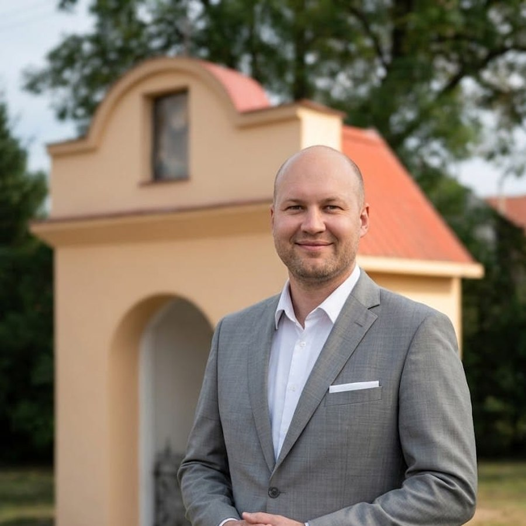

1Hynek Šedý
36 let, ženatý, 2 děti
Obchodní zástupce
Do Velešovic jsem se přistěhoval v roce 2019 a velmi rychle se staly naším domovem. Profesně se věnuji vyřizování povolení pro nadměrné náklady, což obnáší každodenní komunikaci s úřady a detailní znalost legislativy správního řízení. Vystudoval jsem informační technologie, kterým se i nadále částečně věnuji, a svůj volný čas nejraději trávím s dětmi a sportem.
„Kandiduji do zastupitelstva, protože chci aktivně zlepšovat život v naší obci. Z práce jsem zvyklý jednat s úřady a úspěšně dotahovat složitou byrokracii do konce, což chci využít pro rozvoj Velešovic.“